Chapter 6 From base R to dplyr
From base to tidyverse style
相較於R base的較為傳統的R編程風格，tidyverse style的R programming具有以下幾個特點：
基於tidy data理念：tidyverse style的R programming基於tidy data理念，即資料應該以規律的方式組織，以方便分析和視覺化。tidyverse style的R程式庫提供了一些工具和函數，用於處理和轉換tidy data格式的資料，如dplyr、tidyr等。
使用管道操作符：tidyverse style的R programming通常使用管道操作符（%>%），將資料通過多個函數連接起來，形成一個清晰和易於理解的資料處理流程。使用管道操作符可以簡化程式碼並提高程式的可讀性。
強調函數庫的一致性：tidyverse style的R programming強調函數庫之間的一致性，即不同函數庫之間使用相似的函數名稱、參數名稱和返回值等，以方便使用者的學習和使用。
使用簡潔的命名方式：tidyverse style的R programming通常使用簡潔和易於理解的變數和函數命名方式，例如使用動詞表示操作，使用名詞表示資料，以方便使用者理解程式碼的含義。
提供高級的視覺化工具：tidyverse style的R programming提供了一些高級的視覺化工具，如ggplot2、gganimate等，可以幫助使用者更加輕鬆地進行資料視覺化和探索。
6.1 dplyr
dplyr是一個tidyverse風格的R程式庫，用於對資料進行快速、一致、直觀的操作和轉換。dplyr提供了一些高效能的函數和工具，如filter、select、mutate、group_by和summarize等，用於對資料進行選擇、篩選、轉換、分組和摘要等操作。
以下是dplyr常用的函數：
filter：用於選擇符合特定條件的資料列。select：用於選擇特定的欄位。mutate：用於新增或修改欄位。group_by：用於按照特定欄位進行分組。summarize：用於對分組後的資料進行摘要統計。arrange：用於按照欄位的特定順序進行排序。
dplyr具有以下優點：
簡潔而直觀的語法：dplyr的函數名稱和語法都十分簡潔而直觀，易於使用和理解，尤其對於新手來說更加友好。
高效的運行速度：dplyr的設計考慮了資料處理的效率，使用C++實現了部分函數，因此dplyr在處理大型資料集時運行速度較快。
與tidyverse相容：dplyr與其他tidyverse程式庫，如ggplot2和tidyr，可以很好地相容，並且能夠與其他常用的R程式庫進行集成，提供更加全面和高效的資料分析和可視化工具。
6.2 Taipie Theft Count (base to dplyr)
library(tidyverse)
# options(stringsAsFactors = F) # default options in R ver.> 4.06.2.1 Reading data
# Read by read_csv()
# Will raise error
# Error in make.names(x) : invalid multibyte string at '<bd>s<b8><b9>'
# df <- read_csv("data/tp_theft.csv")
# read_csv() with locale = locale(encoding = "Big5")
library(readr)
df <- read_csv("data/臺北市住宅竊盜點位資訊-UTF8-BOM-1.csv")6.2.2 Cleaning data I
- Renaming variables by
select() - Generating variable year
- Generating variable month
- Retrieving area
library(stringr)
selected_df <- df %>%
select(id = 編號,
cat = 案類,
date = `發生日期`,
time = `發生時段`,
location = `發生地點`) %>%
mutate(year = date %/% 10000) %>%
mutate(month = date %/% 100 %% 100) %>%
mutate(area = str_sub(location, 4, 6)) %>%
mutate(county = str_sub(location, 1, 3))6.2.3 Cleaning data II
- Filtering out irrelevant data records
# readr::guess_encoding("data/tp_theft.csv")
filtered_df <- selected_df %>%
# count(year) %>% View
filter(county == "臺北市") %>%
filter(year >= 104) %>%
# count(time) %>% View
# count(location) %>%
filter(!area %in% c("中和市", "板橋市"))6.2.4 Long to wide form
count()two variablespivot_wider()spread one variable as columns to wide form
# count() then pivot_wider()
df.wide <- filtered_df %>%
count(time, area) %>%
pivot_wider(names_from = area, values_from = n, values_fill = 0)
??pivot_wider6.2.5 Setting time as row.name for mosaicplot
row.names(df.wide) <- df.wide$time
df.wide$time <- NULL# Specify fonts for Chinese
# par(family=('STKaiti'))
par(family=('Heiti TC Light')) # for mac
# Specify colors
colors <- c('#D0104C', '#DB4D6D', '#E83015', '#F75C2F',
'#E79460', '#E98B2A', '#9B6E23', '#F7C242',
'#BEC23F', '#90B44B', '#66BAB7', '#1E88A8')
# mosaicplot()
mosaicplot(df.wide, color=colors, border=0, off = 3,
main="Theft rate of Taipei city (region by hour)")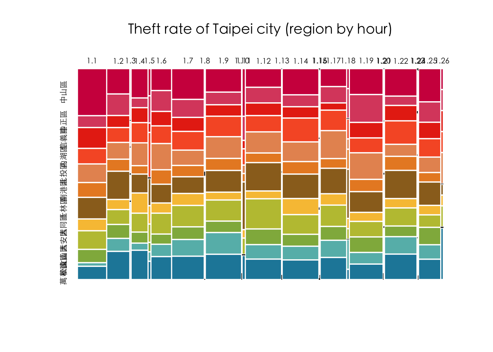
6.2.6 Clean version
library(readr)
# options(stringsAsFactors = F)
df <- read_csv("data/臺北市住宅竊盜點位資訊-UTF8-BOM-1.csv")
selected_df <- df %>%
select(id = 編號,
cat = 案類,
date = `發生日期`,
time = `發生時段`,
location = `發生地點`) %>%
mutate(year = date %/% 10000) %>%
mutate(month = date %/% 100 %% 100) %>%
mutate(area = stringr::str_sub(location, 4, 6)) %>%
mutate(county = stringr::str_sub(location, 1, 3))
selected_df %>% count(year)## # A tibble: 9 × 2
## year n
## <dbl> <int>
## 1 103 1
## 2 104 687
## 3 105 663
## 4 106 560
## 5 107 501
## 6 108 411
## 7 109 304
## 8 110 189
## 9 111 31selected_df %>% count(time) %>% head(10)## # A tibble: 10 × 2
## time n
## <chr> <int>
## 1 00~02 272
## 2 02~04 214
## 3 03~05 8
## 4 04~06 156
## 5 05~07 23
## 6 06~08 191
## 7 08~10 305
## 8 09~11 6
## 9 10~12 338
## 10 11~03 1selected_df %>% arrange(time) %>% head(10)## # A tibble: 10 × 9
## id cat date time location year month area county
## <dbl> <chr> <dbl> <chr> <chr> <dbl> <dbl> <chr> <chr>
## 1 2 住宅竊盜 1040101 00~02 臺北市文山區萬美里萬寧… 104 1 文山… 臺北市
## 2 3 住宅竊盜 1040101 00~02 臺北市信義區富台里忠孝… 104 1 信義… 臺北市
## 3 6 住宅竊盜 1040102 00~02 臺北市士林區天福里1鄰… 104 1 士林… 臺北市
## 4 12 住宅竊盜 1040105 00~02 臺北市中山區南京東路3… 104 1 中山… 臺北市
## 5 33 住宅竊盜 1040115 00~02 臺北市松山區饒河街181~… 104 1 松山… 臺北市
## 6 74 住宅竊盜 1040131 00~02 臺北市南港區重陽路57巷… 104 1 南港… 臺北市
## 7 75 住宅竊盜 1040201 00~02 臺北市北投區中心里中和… 104 2 北投… 臺北市
## 8 92 住宅竊盜 1040210 00~02 臺北市北投區大同路200… 104 2 北投… 臺北市
## 9 95 住宅竊盜 1040212 00~02 臺北市萬華區萬大路493… 104 2 萬華… 臺北市
## 10 106 住宅竊盜 1040216 00~02 臺北市信義區吳興街269… 104 2 信義… 臺北市filtered_df <- selected_df %>%
# count(year) %>% View
filter(year >= 104) %>%
filter(!time %in% c("03~05", "05~07", "09~11", "11~13", "15~17", "17~19", "18~21", "21~23", "23~01"))
# count(time) %>% View
# count(location) %>%
# filter(!area %in% c("中和市", "板橋市"))
df.wide <- filtered_df %>%
count(time, area) %>%
pivot_wider(names_from = area, values_from = n, values_fill = 0) %>%
as.data.frame()
row.names(df.wide) <- df.wide$time
df.wide$time <- NULL
par(family=('Heiti TC Light')) # for mac
# Specify colors
colors <- c('#D0104C', '#DB4D6D', '#E83015', '#F75C2F',
'#E79460', '#E98B2A', '#9B6E23', '#F7C242',
'#BEC23F', '#90B44B', '#66BAB7', '#1E88A8')
# mosaicplot()
mosaicplot(df.wide, color=colors, border=0, off = 3,
main="Theft rate of Taipei city (region by hour)") 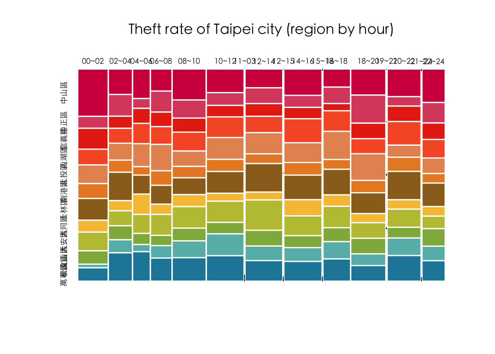
6.3 Paid Maternity Leave
6.3.1 Visual Strategies
這個例子之所以有趣在於記者選定了「美國沒有產假支薪」作為新聞的賣點。在呈現的時候，就必須要盡可能地凸顯這樣的情形。一般來說，會繪製世界地圖來呈現美國是目前少數沒有產假支薪的國家之一（在本資料197個國家中僅有9國目前沒有給付產假薪水。其實該筆來自Word Policy Analysis Center資料含有自1995年至2003年共19年的資料（本案例即就是下載該中心所分享的調查資料，不用申請帳號）。於是該專題的作者便構思利用過去到現在的資料來凸顯美國在這方面一直沒有改變。
但要處理197個國家的在19年間的變化相當不易。例如若為每年繪製一張世界地圖，然後以動畫或動態卷軸來凸顯這19年間美國的變化，也會因為國家數過多而難以聚焦在作者想突顯的美國。
而這便是作者在視覺化上相當具有巧思的地方。由於產假給付程度在該調查中分為五個等級，包含0週、0-14週、14-25週、26-51週、52週以上等。作者便從給付程度最高的層級開始做長條圖，共五個階層的子圖。而每個階層的子圖，作者又將該層級的圖分為「保持不變（Stay Same）」和「持續增加（Increase）」兩組。經過這樣的分組，會得到9個子圖。分別為等級5（保持不變、持續增加）、等級4（保持不變、持續增加）、…、等級1（保持不變）。讀者在看的時候，會依次看到給付程度最高到最低的國家，也可以看到哪些國家在這19年間制度有所變化（通常是增加）。但看到最後的時候，便會看到美國的情形，即是無產假給付。

6.3.2 Code by dplyr
首先，程式碼使用 filter() 函數篩選出符合條件的列，其中 matleave_13 和 matleave_95 兩欄都必須等於 5。接著，pivot_longer() 函數將資料框轉換成長格式（long format），將從第二欄到第二十欄的資料整合到兩個欄位 year 和 degree 中。這裡 names_to 參數指定新欄位 year 的名稱，values_to 參數指定新欄位 degree 的名稱，cols 參數指定要整合的欄位範圍。
接下來，replace_na() 函數將 degree 欄位中的 NA 值替換為 0。然後，mutate() 函數使用 as.POSIXct() 函數將 year 欄位中的字串轉換為日期時間格式，再使用 year() 函數從日期時間中提取年份，最終將年份資訊存儲回 year 欄位中。其中 “matleave_%y” 是日期時間格式字串，其中 “%y” 表示兩位數的年份（例如 “13”）。這樣就將 “matleave_13”、“matleave_14” 等字串轉換成了對應的日期時間。
ggplot() 函數創建了一個空的 ggplot2 圖形物件，使用 aes() 函數定義了 x 軸 year 和 y 軸 degree 的變數名稱。geom_col() 函數指定用長條圖呈現資料，設置了顏色和填充顏色。ylim() 函數限制了 y 軸的範圍，將其設置為 0 到 5，無論y軸資料有沒有到5或者是否超過5，都會限定在0到5之間。facet_wrap() 函數則根據 iso3 欄位生成多個子圖。最後，theme_void() 函數將圖形主題設置為空白，不帶任何邊框或背景。
library(tidyverse)## ── Attaching core tidyverse packages ──────────────────────── tidyverse 2.0.0 ──
## ✔ dplyr 1.1.0 ✔ readr 2.1.4
## ✔ forcats 1.0.0 ✔ stringr 1.5.0
## ✔ ggplot2 3.4.2 ✔ tibble 3.1.8
## ✔ lubridate 1.9.2 ✔ tidyr 1.3.0
## ✔ purrr 1.0.1
## ── Conflicts ────────────────────────────────────────── tidyverse_conflicts() ──
## ✖ dplyr::filter() masks stats::filter()
## ✖ dplyr::lag() masks stats::lag()
## ℹ Use the conflicted package (<http://conflicted.r-lib.org/>) to force all conflicts to become errorsoptions(scipen = 999)
library(readxl)
matleave <- read_excel("data/WORLD-MACHE_Gender_6.8.15.xls", "Sheet1", col_names=T) %>%
select(iso3, 6:24)
matleave %>%
filter(matleave_13 == 5, matleave_95 == 5) %>%
pivot_longer(names_to = "year", values_to = "degree", cols = 2:20) %>%
replace_na(list(degree = 0)) %>%
mutate(year = year(as.POSIXct(strptime(year, "matleave_%y")))) %>%
ggplot() +
aes(year, degree) +
geom_col(color = "royalblue", fill = "royalblue") +
ylim(0, 5) +
facet_wrap(~ iso3) +
theme_void()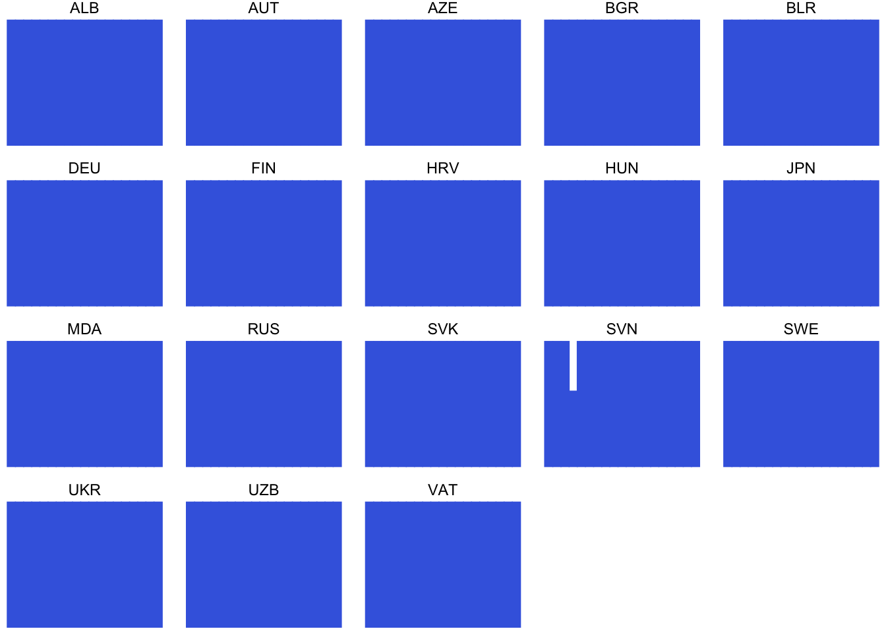
6.3.3 Generating each
在 R 中，函式是一個可重複使用的程式碼塊，可以接受輸入參數，並返回計算結果。函式可以簡化程式碼，使其更易於維護和修改。為了不要重複相同的程式碼，以下程式碼將視覺化的部分改用「函式」來進行撰寫，再輸入不同子圖所要使用的資料來進行繪圖。
在這個程式碼中，generating_plot() 是一個自定義的函式，它接受一個資料框 df 作為輸入參數。成對大括號內部為該函式所執行的步驟，包含pivot_longer()、replace_na()等。輸出則是一個 ggplot2 圖形物件，其中包含了將這些資料轉換為長條圖的視覺化表示。
在 R 中，創建一個函式需要使用 function() 關鍵字。一個最簡單的函式可能只包含一個輸入參數和一個返回值，例如：my_function <- function(x) {return(x^2)}。在這個例子中，函式名稱是 my_function，它有一個輸入參數 x，函式主體是 x^2，表示將輸入的 x 參數平方。函式主體的執行結果通過 return() 函數返回，並可以存儲到變數中，例如：result <- my_function(3)。函式的定義亦可包含多個輸入參數，可以用數字、list、或Data.Frame等當成輸入參數。
library(tidyverse)
options(scipen = 999)
library(readxl)
matleave <- read_excel("data/WORLD-MACHE_Gender_6.8.15.xls", "Sheet1", col_names=T) %>%
select(iso3, 6:24)
generating_plot <- function(df){
df %>%
pivot_longer(names_to = "year", values_to = "degree", cols = 2:20) %>%
replace_na(list(degree = 0)) %>%
mutate(year = year(as.POSIXct(strptime(year, "matleave_%y")))) %>%
ggplot() +
aes(year, degree) +
geom_col(color = "royalblue", fill = "royalblue") +
ylim(0, 5) +
facet_wrap(~ iso3) +
theme_void() +
theme(strip.text = element_text(size = 14, face = "bold", vjust=0.5),
strip.placement = "inside"
)
}
matleave %>% filter(matleave_13 == 5, matleave_95 == 5) %>% generating_plot()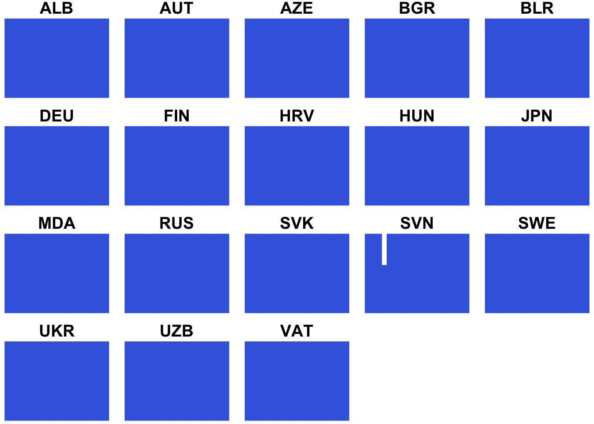
matleave %>% filter(matleave_13 == 5, matleave_95 != 5) %>% generating_plot()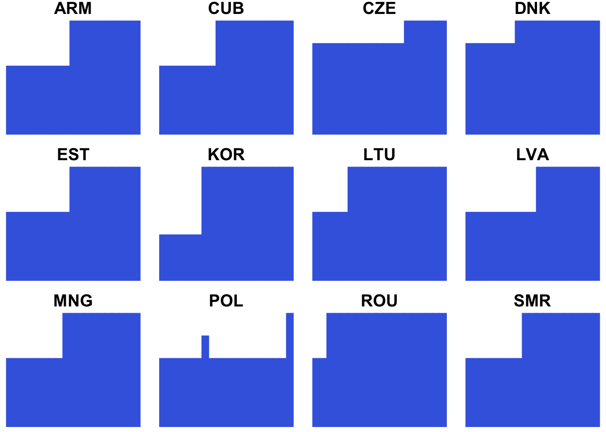
matleave %>% filter(matleave_13 == 4, matleave_95 == 4) %>% generating_plot()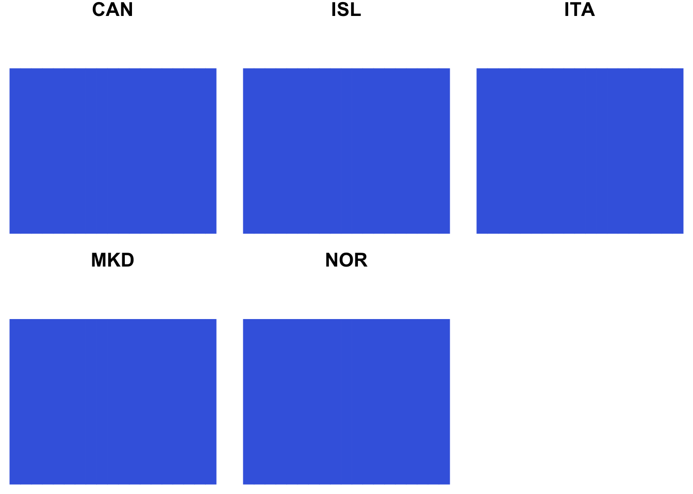
matleave %>% filter(matleave_13 == 4, matleave_95 != 4) %>% generating_plot()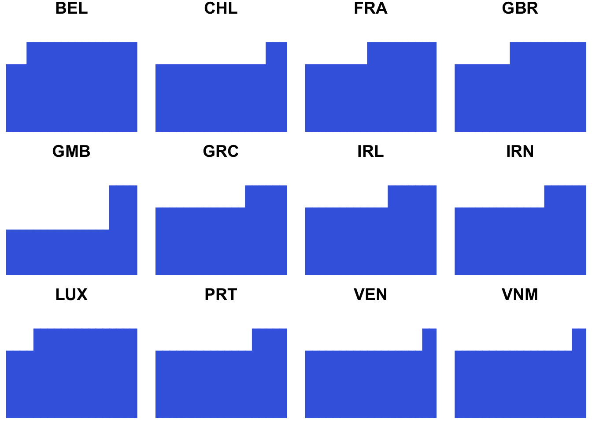
matleave %>% filter(matleave_13 == 3, matleave_95 == 3) %>% generating_plot()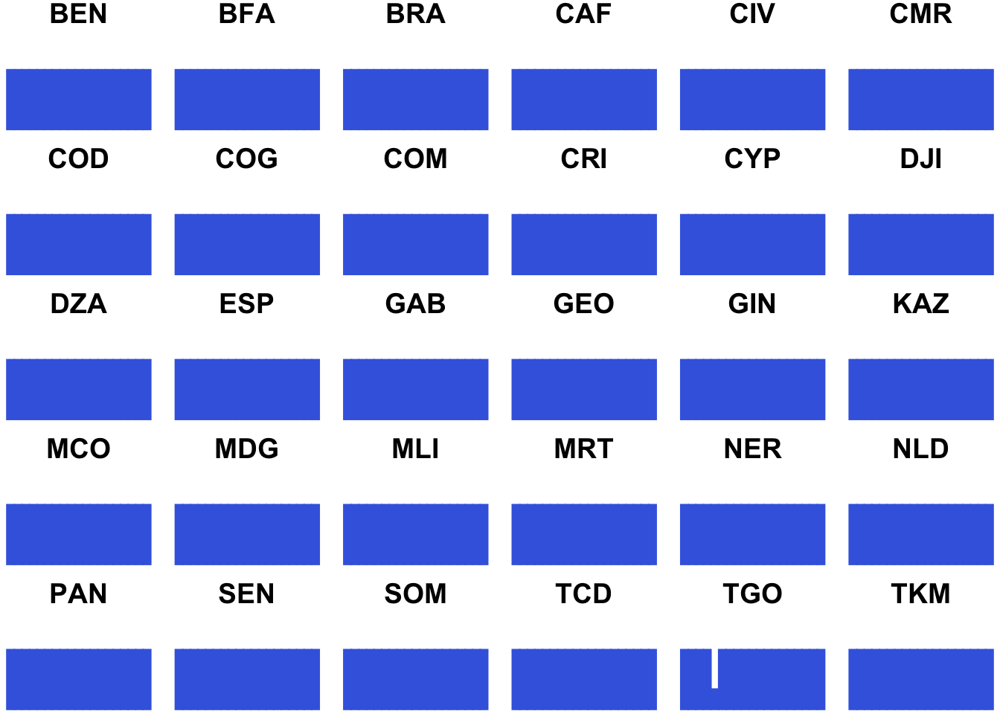
matleave %>% filter(matleave_13 == 3, matleave_95 != 3) %>% generating_plot()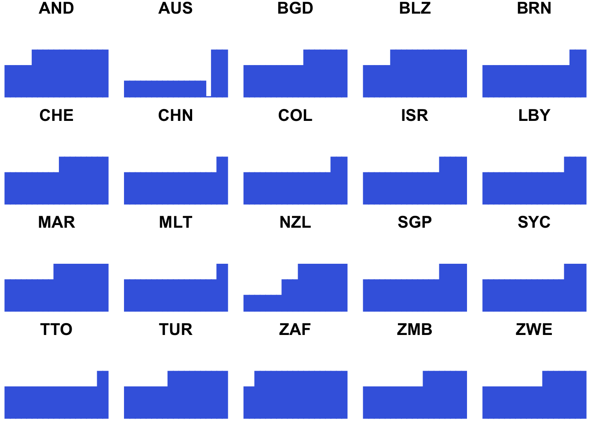
matleave %>% filter(matleave_13 == 2, matleave_95 == 2) %>% generating_plot()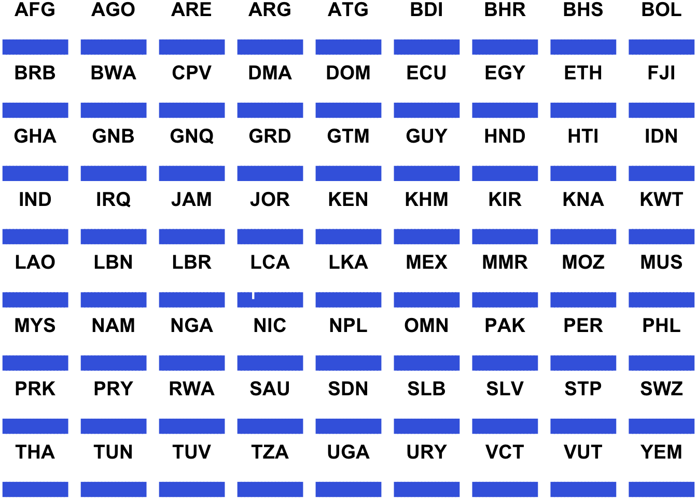
matleave %>% filter(matleave_13 == 2, matleave_95 != 2) %>% generating_plot()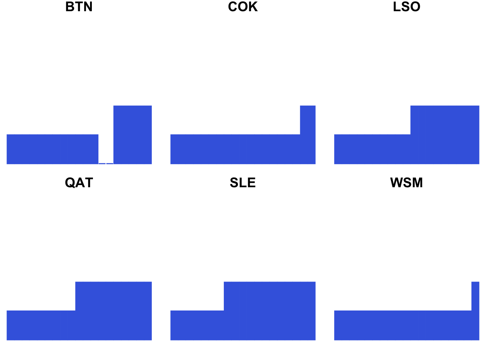
matleave %>% filter(matleave_13 == 1) %>% generating_plot()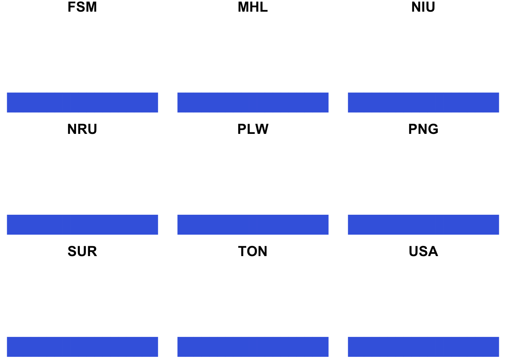
6.3.4 Gathering subplots by cowplot
這段程式碼的作用是將多個 ggplot2 圖形物件組合成一個網格，然後將這個網格圖形儲存為一個圖像文件。首先，這段程式碼定義了多個變數，如 plot_row1、plot_row2、plot_row3 等，每個變數都是一個網格圖形。這些變數通過 plot_grid() 函數來創建，這個函數可以將多個 ggplot2 圖形物件組合成一個網格。在 plot_grid() 函數中，可以設置 labels 參數來為每個子圖添加標籤。
然後，這些變數通過 plot_grid() 函數再次組合，形成一個更大的網格圖形。這裡使用 ncol = 1 參數將多個網格排列成一列。最後，使用 ggsave() 函數將這個網格圖形儲存為一個圖像文件。在這個例子中，圖像文件的名稱是 “test.png”，大小為 10 英寸 x 30 英寸，分辨率為 300 DPI。
總的來說，這段程式碼的作用是將多個 ggplot2 圖形物件組合成一個網格，並將這個網格圖形儲存為一個圖像文件。這樣做可以方便地進行圖像導出和共享，並且可以將多個圖形合併在一起進行比較和分析。
library(cowplot)
plot55 <- matleave %>% filter(matleave_13 == 5, matleave_95 == 5) %>% generating_plot()
plot05 <- matleave %>% filter(matleave_13 == 5, matleave_95 != 5) %>% generating_plot()
plot44 <- matleave %>% filter(matleave_13 == 4, matleave_95 == 4) %>% generating_plot()
plot04 <- matleave %>% filter(matleave_13 == 4, matleave_95 != 4) %>% generating_plot()
plot33 <- matleave %>% filter(matleave_13 == 3, matleave_95 == 3) %>% generating_plot()
plot03 <- matleave %>% filter(matleave_13 == 3, matleave_95 != 3) %>% generating_plot()
plot22 <- matleave %>% filter(matleave_13 == 2, matleave_95 == 2) %>% generating_plot()
plot02 <- matleave %>% filter(matleave_13 == 2, matleave_95 != 2) %>% generating_plot()
plot11 <- matleave %>% filter(matleave_13 == 1) %>% generating_plot()
plot_row1 <- plot_grid(plot55, plot05, labels = c('STAY 5', 'INCREASE TO 5'))
plot_row2 <- plot_grid(plot44, plot04, labels = c('STAY 4', 'INCREASE TO 4'))
plot_row3 <- plot_grid(plot33, plot03, labels = c('STAY 3', 'INCREASE TO 3'))
plot_row4 <- plot_grid(plot22, plot02, labels = c('STAY 2', 'INCREASE TO 2'))
final_plot <- plot_grid(
plot_row1, plot_row2, plot_row3, plot_row4, plot11,
ncol = 1
)
ggsave("test.png", final_plot, width=10, height=30, dpi=300)